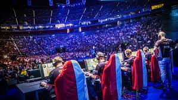
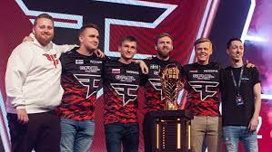
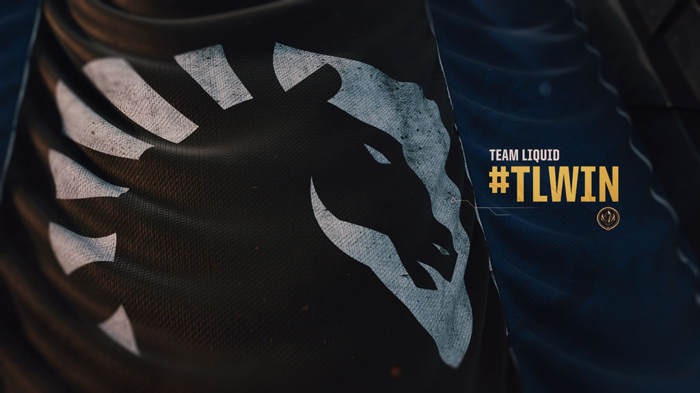
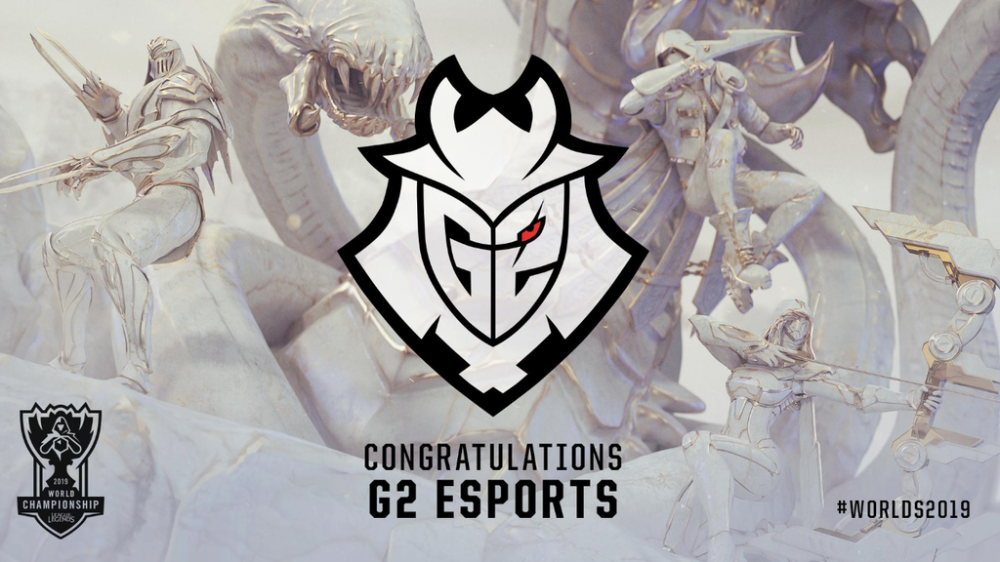
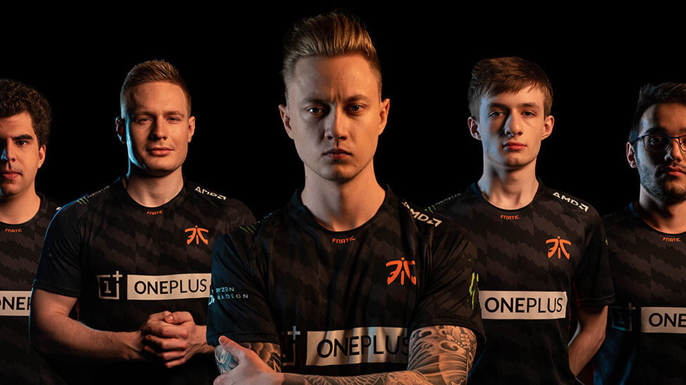
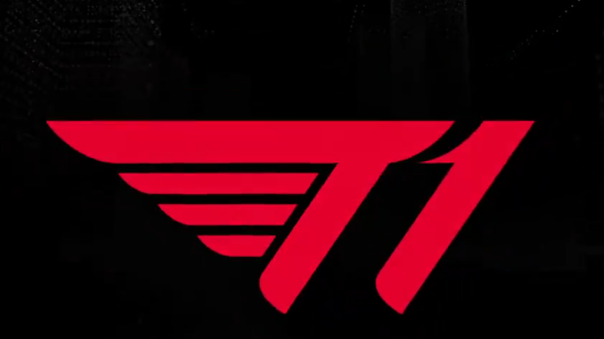
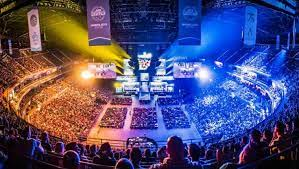
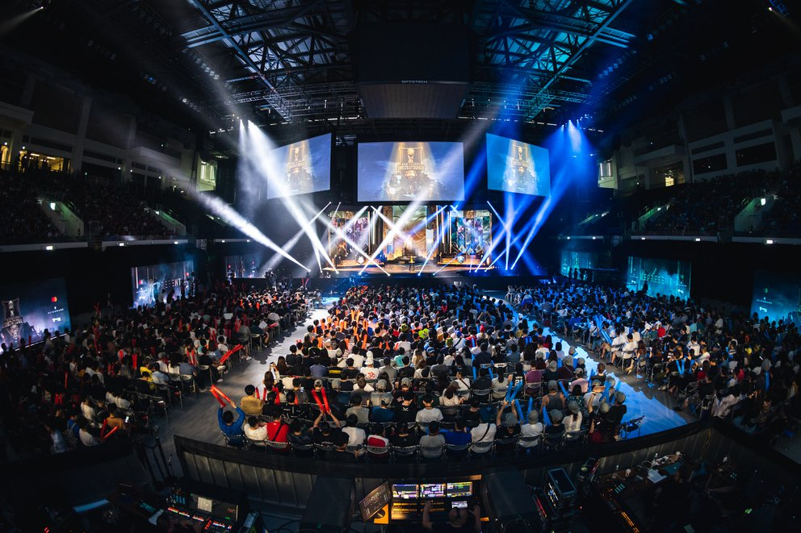
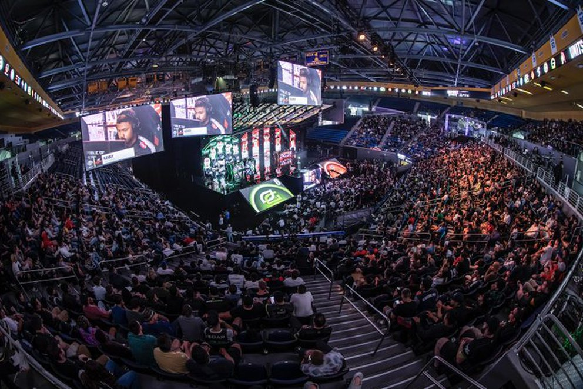

En esta pagina hablare de sobre competencias profesionales de videojuegos
Los eSports o deportes electrónicos son una novedad en el campo de los videojuegos.
Este concepto se utiliza para nombrar las competiciones organizadas a nivel profesional. Son competiciones multijugador de diferentes disciplinas de videojuegos. Su funcionamiento es muy sencillo: cada esport tiene sus propias reglas y tienen acceso a diferentes dispositivos y plataformas de forma online u offline.
Los medios españoles ya se dieron cuenta del potencial de los deportes electónicos hace unos años.
De ahí nació el programa Esports Generation en GOL, un informativo de 45 minutos que además de ofrecer las novedades del mundillo ofrecía reportajes de las competiciones de la LVP (Liga de videojuegos profesional) y la aparición semanal de profesionales de diversos equipos.

Datos sobre los esports
A continuación te dejamos diversos datos para ayudarte a entender qué son los esports, cuál es el perfil medio de su audiencia y claves sobre su forma de consumir según las últimas encuestas:
La mayor parte de la audiencia prefiere jugar a eSports los fines de semana (62 %), frente a la que prefiere hacerlo entre semana (38 %).
El aficionado a esports vive su pasión de forma activa y pasiva.
La gran mayoría de los encuestados aseguran que prefieren ver y jugar a esports (86 %) antes de solo jugar (7,6 %) o solo ver (5,7 %).
Las mujeres han representado casi el 9 % de los encuestados, frente al más del 80 % de hombres.
Un dato que a primera vista podría parecer muy bajo, pero que esconde un aumento del 293 % de la representación femenina respecto al año pasado.
El PC del hogar sigue siendo el dispositivo preferido para ver esports (60 %), seguido por el móvil como segunda opción (22 %) y, en tercer lugar, pero muy alejado de los primeros puestos está la televisión (5,9 %).
España es el tercer país con mayor crecimiento en el sector.

Actualmente existen distintos equipos muy famosos, pero los actuales referentes son:

Team Liquid
cuenta con equipos en múltiples disciplinas y 2019 ha sido un gran año para ellos, ya que han logrado
dominar Norteamérica en League of Legends y éxitos internacionales en otros títulos como Dota 2, Clash Royale o CS:GO, por ejemplo.

G2 Esports
ha dominado League of Legends y a punto ha estado de conseguir el Grand Slam. Más allá de eso, también compite en otros juegos y a principios de 2019
consiguieron ganar el Six Invitational de Rainbow Six. Durante el año también alcanzaron finales internacionales en Rocket League y CS:GO, por ejemplo.

Fnatic
es uno de los grandes históricos de los deportes electrónicos europeos y, aunque 2019 no ha sido un año cargado de éxitos para ellos, sí han conseguido
competir al primer nivel en todos los juegos en los que están presentes.

T1, o SK Telecom T1
, es un club que durante 2019 se ha extendido a nuevas disciplinas pero
cuyo principal foco es League of Legends, de donde proceden buena parte de sus horas visualizadas.
Al igual que existen equipos, existen mas competencias profesionales donde se ganan millones de dolares o euros.

Mid-Season Invitational:

Es el segundo torneo más importante de League of Legends a nivel mundial. Se juga a mitad de la temporada competitiva, entre el primer y segundo split. Lo disputan 13 equipos, y solo clasifican los campeones de cada región, por lo que Latinoamérica dirá presente.
Call Of Duty League

El Call of Duty comenzará el 2020 con un nuevo modelo de franquicias. Es decir que cada equipo compró un slot dentro del torneo, por un precio cercano a los 25 millones de dólares. La liga tendrá nueve escuadras de los Estados Unidos, una de Canadá, una de Inglaterra y una de Francia. Cada semana, una de las organizaciones recibirá al evento en su ciudad, por lo que se disputará en un punto distinto del mapa cada vez.
La fecha exacta y el país que recibirá el evento aún no se confirmaron, pero lo más probable es que sea en una de las regiones emergentes.
Pues hasta aqui la informacion sobre los e-sports que conozco actualmente y sobre competencias